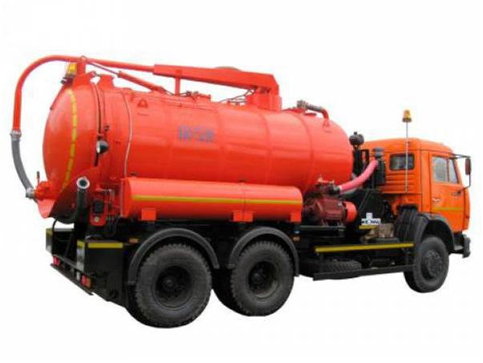
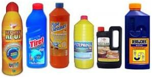
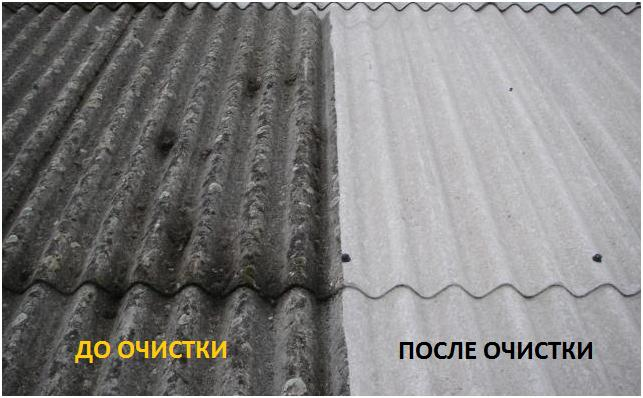

|
|
Аварийная бригада к Вашим услугам!
Наша компания предлагает услуги по удалению засоров и причин их вызывающих. По сути это весьма близкие понятия, но имеющие собственную специфику. Работы по устранению засоров имеют под собой цель пробивку засора или его промывку. Удаление же позволяет устранить не только сам засор, но и его причины. Для удаления засоров обычно требуется более длительная процедура как по диагностике причин возникновения засоров, так и по их удалению.
Наша компания использует следующие современные технологии устранения засоров: Гидродинамическая прочистка наружной канализации. Она позволяет эффективно разрушить отложения тонкими струями воды, подаваемой в систему под большим давлением. Одновременно она выводит все загрязнения наружу, что позволяет быстро устранить засор и его причину; Механическая прочистка засоров канализации. Это более дешевый, но также весьма эффективный способ, позволяющий удалить отложения посредством тросов с различными насадками. Использовать его следует осторожно, чтобы не повредить трубу;
|  |
|
Химическая промывка канализации лучший способ профилактики появление нового засора в канализации, Для удаления засора механических и гидродинамических способом обычно требуется более длительная процедура как по диагностике причин возникновения засоров, так и по их удалению. Как правило для для частных домов и коттеджей мы рекомендуем химические реагенты которые можно использовать с целью профилактической чистки труб самостоятельно так и нашими специалистами.
|  | В продаже имеется достаточно большое количество продукции для промывки канализации, как в порошкообразной (и в виде гранул), так и в жидкой форме. Сухие вещества наиболее доступные, но гелеобразные и жидкие активнее вступают в реакции и способствуют более полной очистке загрязнений. Для прочистки канализации средство в больших объемах вводят в трубу и оставляют на некоторое время. После этого система промывается большим количеством горячей воды. |
|  |
- ОЧИСТКА ЛЮБЫХ ПОВЕРХНОСТЕЙ И ВИДОВ ЗАГРЯЗНЕНИЯ С помощью гидродинамического оборудования можем осуществить мойку бетонных ограждений, заборов, крыш, бассейнов. |
- УСЛУГИ ПО МОНТАЖУ САНТЕХ ОБОРУДОВАНИЯ